전기산업기사 (2009-05-10 기출문제)
1과목: 전기자기학
1. 그림과 같이 평행한 두 개의 무한 직선 도선에 전류 I, 2I인 전류가 흐른다. 두 도선 사이의 점 P에서 자계의 세기가 0이다. 이때 a/b는?
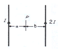
- 4
- 2
- 1/2
- 1/4
(정답률: 81%)

2. 서로 같은 방향으로 전류가 흐르고 있는 평행한 두 도선 사이에는 어떤 힘이 작용 하는가?
- 서로 미는 힘
- 서로 당기는 힘
- 회전하는 힘
- 하나는 밀고, 하나는 당기는 힘
(정답률: 66%)
3. 비유전율이 3인 유전체내의 한 점의 전장이 3×105[V/m]일 때, 이 점의 분극의 세기는 몇[C/m2]인가?
- 1.77 × 10-6
- 5.31 × 10-6
- 7.08 × 10-6
- 8.85 × 10-6
(정답률: 64%)
4. 환상 솔레노이드 코일에 흐르는 전류가 2[A]일 때, 자로의 자속이 3×10-2[Wb]이었다고 한다. 코일의 권수를 500회라 하면, 이 코일의 자기 인덕턴스는 몇[H]인가? (단, 코일의 전류와 자로의 자속과는 정비례하는 것으로 한다.)
- 3.0
- 5.5
- 6.0
- 7.5
(정답률: 70%)
5. 정전용량 5[㎌]인 콘덴서를 200[V]로 충전하여 자기인덕턴스 20[mH], 저항 0인 코일을 통해 방전할 때 생기는 전기진동 주파수 f는 약 몇[Hz] 이며, 코일에 축적되는 에너지 W는 몇[J] 인가?
- f = 500Hz, W = 0.1[J]
- f = 50Hz, W = 1[J]
- f = 500Hz, W = 1[J]
- f = 5000Hz, W = 0.1[J]
(정답률: 69%)
6. 길이 1[cm] 마다 권수가 50인 무한장 솔레노이드에 500[mA]의 전류를 흘릴 때 내부의 자계는 몇 [AT/m]인가?
- 1250
- 2500
- 12500
- 25000
(정답률: 58%)
7. 균등자장 H0중에 비투자율 μr, 반지름 a 의 자성체구를 놓았을 때, 자화의 세기가 M이였다면, 자성체 구의 내부자계의 세기는?
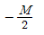
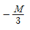
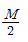
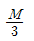
(정답률: 43%)
8. 그림과 같이 전속밀도 D=1[C/m2] 중에,εs=5 인 유전체가 놓여 있어서 균일하게 분극이 생겼다면 분극도 P는 몇[C/m2]인가?
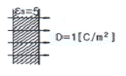
- 0.3
- 0.5
- 0.8
- 1.0
(정답률: 55%)
9. 접지 구도체와 점전하간에 작용하는 힘은?
- 항상 반발력이다.
- 조건적 반발력이다.
- 항상 흡입력이다.
- 조건적 흡입력이다.
(정답률: 85%)
10. 100[Kw]의 전력이 안테나에서 사방으로 균일하게 방사될 때 안테나에서 1[km] 거리에 있는 전계의 실효값은 약 몇[V/m]인가?
- 1.73
- 2.45
- 3.68
- 6.21
(정답률: 66%)
11. 전자석의 흡입력은 공극의 자속밀도를 B라 할 때, 다음의 어느것에 비례하는가?
- B1.6
- B2.0
- B3
- B
(정답률: 75%)
12. 표면전하밀도 ps = 0인 도체 표면상의 한 점의 전속밀도가
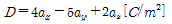
일 때 ps는 몇[C/m2] 인가?- 2√3
- 2√5
- 3√3
- 3√5
(정답률: 49%)
13. 그림과 같이 반지름 r[m]인 원의 임의의 2점 a, b (각 θ)사이에 전류 I [A]가 흐른다. 원의 중심 0의 자계의 세기는 몇[A/m] 인가?
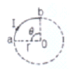
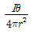
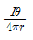
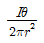
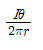
(정답률: 40%)
14. 지름이 40[mm]인 종이관에 일정하게 2000회의 코일이 감겨 있는 솔레노이드의 인덕턴스는 몇[mH]인가? (단, 솔레노이드의 길이는 50cm, 투자율은 μ0라고 한다.)
- 1.26
- 12.6
- 126
- 1260
(정답률: 60%)
15. 1[㎌]의 콘덴서를 30[kV]로 충전하여 200[Ω]의 저항에 연결하면 저항에서 소모되는 에너지는 몇[J]인가?
- 450
- 900
- 1350
- 1800
(정답률: 56%)
16. 폐곡면을 통하여 나가는 전력선의 총수는 그 내부에 있는 점전하의 대수합의 몇 배와 같은가?
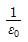
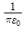
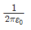
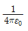
(정답률: 70%)
17. 전속밀도의 시간적 변화율을 무엇이라 하는가?
- 전계의 세기
- 변위전류밀도
- 에너지밀도
- 유전율
(정답률: 74%)
18. 표피효과에 관한 설명으로 옳지 않은 것은?
- 도체에 교류가 흐르면 전류밀도는 표면에 가까울수록 커진다.
- 고주파일수록 심하지 않아 실효저항이 감소한다.
- 고주파일수록 현저하게 나타난다.
- 내부 도체는 전도에 거의 관여하지 않으므로 외견상 단면적이 감소하여 저항이 커진 것 같은 현상이다.
(정답률: 55%)
19. 자속의 연속성을 나타내는 식은?
- B = μH
- ∇ ㆍ B = 0
- ∇ ㆍ B = p
- ∇ ㆍ B = -μH
(정답률: 76%)
20. 정전계 내에 도체가 존재하는 경우에 대한 설명으로 다음 중 옳지 않은 것은?
- 도체 표면은 등전위면이다.
- 도체 내부에는 전계가 존재하지 않는다.
- 도체 내부의 유도전계는 외부전계와 크기는 같다.
- 도체에 전하를 대전시킬 수 없어 전하는 모두 도체 표면에만 존재 한다.
(정답률: 42%)
2과목: 전력공학
21. 변압기의 기계적 보호계전기인 부흐홀쯔계전기의 설치 위치로 알맞은 것은?
- 유면 위의 탱크내
- 컨서베이터 내부
- 변압기의 고압측 부싱
- 주탱크와 컨서베이터를 연결하는 파이프의 관중
(정답률: 62%)
22. 일반적으로 전선 1가닥의 단위 길이당의 작용 정전용량
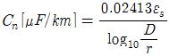
으로 표시되는 경우 여기서 D는 무엇을 나타내는가?- 선간 반지름
- 선간 거리
- 전선 지름
- 선간거리 × 1/2
(정답률: 78%)
23. 그림과 같이 임피던스 Z1,Z2,Z3을 그림과 같이 접속한 선로의 A쪽에서 전압파 E가 진행해 왔을 때 접속점 B에서 무반사로 되기 위한 조건은?
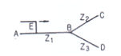
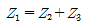
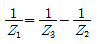
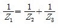
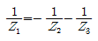
(정답률: 71%)
24. 6600[V]로 수전하는 자가용 전기 설비가 있다. 수전점에서 계산한 3상 단락 용량은 90[MVA]인데 이곳에 시설한 차단기의 최소정격차단전류 [kA]로 가장 적당한 것은?
- 2
- 8
- 12
- 14
(정답률: 49%)
25. 정사각형으로 배치된 4도체 송전선이 있다. 소도체의 반지름이 1[cm] 이고, 한변의 길이가 32[cm]일 때, 소도체간의 기하학적 평균거리는 몇[cm] 인가?
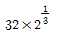
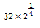
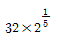
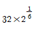
(정답률: 58%)
26. 원자력 발전소와 화력 발전소의 특성을 비교한 것 중 옳지 않은 것은?
- 원자력 발전소는 화력발전소의 보일러 대신 원자로와 열교환기를 사용한다.
- 원자력 발전소의 건설비는 화력발전소에 비하여 낮다.
- 동일 출력일 경우 원자력 발전소의 터빈이나 복수기가 화력발전소에 비하여 대형이다.
- 원자력 발전소는 방사능에 대한 차폐 시설물의 투자가 필요하다.
(정답률: 79%)
27. 전력계통의 안정도 향상 대책으로 옳지 않은 것은?
- 계통의 직렬 리액턴스를 낮게 한다.
- 고속도 재폐로 방식을 채용한다.
- 지락 전류를 크게 하기 위하여 직접 접지 방식을 채용한다.
- 고속도 차단 방식을 채용한다.
(정답률: 62%)
28. 발전기의 단락비가 적어질 경우에 일어나는 현상 중 옳은 것은?
- 발전기가 대형으로 된다.
- 관성정수가 커진다.
- 전압변동률이 커진다.
- 안정도가 향상된다.
(정답률: 67%)
29. 역률(늦음) 80%, 10[kVA]의 부하를 가지는 주상변압기의 2차측에 2[kVA]의 전력용 콘덴서를 접속하면 주상변압기에 걸리는 부하는 약 몇[kVA]가 되겠는가?
- 8
- 8.5
- 9
- 9.5
(정답률: 51%)
30. 정격용량 20000[kVA], 임피던스 8%인 3상 변압기가 2차 측에서 3상 단락되었을 때 단락 용량은 몇[MVA] 인가?
- 160
- 200
- 250
- 320
(정답률: 71%)
31. 변류기 개방시 2차측을 단락하는 이유는?
- 2차측 절연 보호
- 2차측 과전류 보호
- 측정 오차 방지
- 1차측 과전류 방지
(정답률: 79%)
32. 송전선로의 안정도 향상 대책이 아닌 것은?
- 병행 다회선이나 복도체 방식 채용
- 속응 여자방식 채용
- 계통의 직렬 리액턴스 증가
- 고속도 차단기 이용
(정답률: 71%)
33. 일반적인 경우 그 값이 1 이상인 것은?
- 수용율
- 전압 강하율
- 부하율
- 부등율
(정답률: 79%)
34. 중성점 접지방식 중 비접지 방식을 직접접지 방식과 비교한 것으로 옳지 않은 것은?
- 지락 전류가 적다.
- 보호계전기 동작이 확실하다.
- 1선 지락시 통신선 유도장해가 적다.
- 과도안정도가 크다.
(정답률: 50%)
35. 수전 설비의 운영에 있어 인터록의 설명으로 옳은 것은?
- 차단기가 열려 있어야만 단로기를 닫을 수 있다.
- 차단기가 닫혀 있어야만 단로기를 닫을 수 있다.
- 차단기가 열려 있으면 단로기가 닫히고, 단로기가 열려 있으면 차단기가 닫힌다.
- 차단기의 접점과 단로기의 접점이 기계적으로 연결되어 있다.
(정답률: 59%)
36. 불평형 부하에서 역률은 어떻게 표현 되는가?
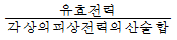
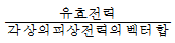
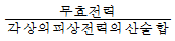
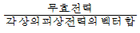
(정답률: 72%)
37. 중성점이 직접 접지된 6600[V], 3상 발전기의 1 단자가 접지 되었을 경우 예상되는 지락 전류의 크기는 약 몇[A]인가? (단,발전기의 임피던스는
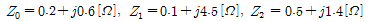
이다.)- 1578
- 1678
- 1745
- 3023
(정답률: 40%)
38. 다음 중 지락 전류의 크기가 최소인 중성점 접지 방식은?
- 비접지
- 소호 리액터 접지
- 직접 접지
- 고저항 접지
(정답률: 61%)
39. 화력 발전소에서 재열기의 목적은?
- 공기의 예열
- 급수의 재열
- 증기의 재열
- 배출가스의 재열
(정답률: 66%)
40. 코로나의 방지대책으로 적당하지 않은 것?
- 복도체를 사용한다.
- 가선금구를 개량한다.
- 전선의 바깥 지름을 크게 한다.
- 선간거리를 감소시킨다.
(정답률: 52%)
3과목: 전기기기
41. 불평형 전압 상태에서 3상 유도전동기를 운전하면 토크와 입력은 어떻게 되는가?
- 토크가 감소하고, 입력도 감소한다.
- 토크는 감소하고, 입력은 증가한다.
- 토크는 증가하고, 입력은 감소한다.
- 토크가 증가하고, 입력도 증가한다.
(정답률: 49%)
42. 운전 코일과 기동 코일로 구성된 단상 유도 전동기의 내부에 설치되어 있으며 일정한 속도에 도달하면 기동권선을 전원으로부터 분리하는 기능을 가지고 있는 스위치는?
- 리미트 스위치
- 원심력 스위치
- 캄 스위치
- 셀렉트 스위치
(정답률: 45%)
43. 직류 전동기의 공급 전압을 V[V], 자속을 ø [Wb], 전기자 전류를 Ia[A], 전가지 저항을 Ra[Ω], 속도를 N[rpm] 이라 할 때, 속도의 관계식은 어떻게 되는가? (단, k는 상수이다)
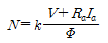
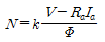
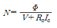
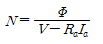
(정답률: 71%)
44. 2대의 단권 변압기를 사용해서 V 결선 하면 2대의 자기 용량은?
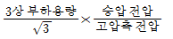
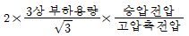
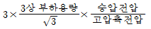
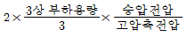
(정답률: 69%)
45. 변압기유의 요구 특성이 아닌 것은?
- 인화점이 높을 것
- 응고점이 낮을 것
- 점도가 클 것
- 절연 내력이 클 것
(정답률: 75%)
46. 병렬운전을 하고 있는 3상 동기 발전기에 동기화 전류가 흐르는 경우는 어느 때인가?
- 부하가 증가할 때
- 여자전류를 변화시킬 때
- 부하가 감소할 때
- 원동기의 출력이 변화할 대
(정답률: 39%)
47. 권선형 유도 전동기에서 2차 저항을 변화시켜서 속도제어를 할 경우 최대 토크?
- 항상 일정하다.
- 2차 저항에만 비례한다.
- 최대 토크가 생기는 점의 슬립에 비례한다.
- 최대 토크가 생기는 점의 슬립에 반비례한다.
(정답률: 62%)
48. 동기 발전기의 단자 부근에서 단락이 일어났다고 할 때 단락 전류에 대한 설명으로 옳은 것은?
- 서서히 증가한다.
- 발전기는 즉시 정지한다.
- 일정한 큰 전류가 흐른다.
- 처음은 큰 전류가 흐르나 점차로 감소한다.
(정답률: 72%)
49. 직류기의 손실 중 기계손에 속하는 것은?
- 브러시의 전기손
- 와전류손
- 풍손
- 전기자 권선 동손
(정답률: 67%)
50. 다음 중 부하의 변화에 대하여 속도 변동이 가장 큰 직류 전동기는?
- 분권 전동기
- 차동 복권 전동기
- 가동 복권 전동기
- 직권 전동기
(정답률: 69%)
51. 1000[kW], 500[V]의 분권 발전기가 있다. 회전수 240[rpm]이며, 슬롯수 192, 슬롯내부 도체수 6, 자극수가 12 일 때, 전부하시의 자속수 [Wb]는 약 얼마인가? (단, 전기자 저항은 0.006[Ω]이고, 단중 중권이다.)
- 0.001
- 0.11
- 0.185
- 1.85
(정답률: 43%)
52. 3상 유도 전동기의 전원 주파수를 변화하여 속도를 제어하는 경우 전동기의 출력 P와 주파수 f 와의 관계는?
- P ∝ f
- P ∝ 1/f
- P ∝ f2
- P는 f와 무관
(정답률: 68%)
53. 10[kVA], 2000/100[V] 변압기에서 1차로 환산한 등가 임피던스는 6.2+j7 [Ω]이다. 변압기의 %리액턴스 강하는 얼마인가?
- 0.75
- 1.75
- 3.0
- 6.0
(정답률: 54%)
54. 단상유도전압 조정기 2차 전압이 100±30[V] 이고, 직렬권선의 전류 (2차 전류)가 5[A]인 경우의 정격 출력은 몇[kVA]인가?
- 0.1
- 0.15
- 0.26
- 0.45
(정답률: 58%)
55. 4극, 60[Hz],의 3상 동기 발전기가 있다. 회전자의 주변 속도를 240[m/s]로 하려면 회전자의 지름을 약 몇[m]로 하여야 하는가?
- 0.03
- 1.91
- 2.5
- 3.2
(정답률: 62%)
56. 회전 변류기의 직류측의 전압을 변경하려면 슬립링에 가해지는 교류측 전압을 변화시킨다. 그 방법이 아닌 것은?
- 직렬리액턴스에 의한 방법
- 유도 전압 조정기에 의한 방법
- 분류저항 삽입에 의한 방법
- 부하시 전압조정 변압기에 의한 방법
(정답률: 49%)
57. 단상유도 전압 조정기에 대한 설명 중 옳지 않은 것은?
- 전압, 위상의 변화가 없다.
- 회전 자계에 의한 유도 작용을 한다.
- 교번 자계의 전자 유도 작용을 이용한다.
- 무단으로 스무드(smooth)하게 전압이 조정된다.
(정답률: 41%)
58. 동기 전동기에서 난조를 일으키는 원인이 아닌 것은?(문제 오류로 실제 시험에서는 모두 정답 처리된 문제입니다. 여기서는 가답안인 1번을 누르면 정답 처리 됩니다.)
- 회전자의 관성이 적다.
- 원동기의 토크에 고조파 토크를 포함하는 경우이다.
- 전기자 회로의 저항이 크다.
- 원동기의 조속기의 감도가 너무 예민하다.
(정답률: 61%)
59. 단상 직권 정류자 전동기의 기본형이 아닌 것은?
- 직권형
- 보상 직권형
- 유도 보상 직권형
- 톰슨형
(정답률: 67%)
60. 3상 반파정류회로에서 직류전압의 파형은 전원 전압의 주파수의 몇 배의 교류분을 포함하는가?
- 1
- 2
- 3
- 6
(정답률: 64%)
4과목: 회로이론
61. 다음과 같은 회로의 구동점 임피던스는? (단 w는 회로의 각 주파수이다.)
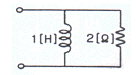
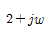
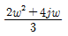
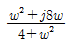
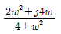
(정답률: 54%)
62. 정전용량 C 만의 회로에서 100[V], 60[Hz]의 교류를 가했을 때 60[mA]의 전류가 흐른다면 C는 몇[㎌] 인가?
- 5.26
- 4.32
- 3.59
- 1.59
(정답률: 61%)
63. 대칭 6상 기전력의 선간 전압과 상기전력의 위상차는?
- 120
- 60
- 30
- 15
(정답률: 60%)
64. 어떤 회로에서 j = 10sin(314t-π/6)[A]의 전류가 흐른다. 이를 복소수로 표시하면?
- 6.12-j3.54
- 17.32-j5
- 3.54-j6.12
- 5-j17.32
(정답률: 51%)
65. 어느 회로에서 전압과 전류의 실효값이 각각 60[V], 10[A]이고, 역률이 0.8일 때 무효전력은 몇[var]인가?
- 360
- 300
- 200
- 100
(정답률: 60%)
66. 기본파의 30[%]인 제 3고조파와 기본파의 20[%]인 제 5고조파를 포함하는 전압파의 왜형률은 약 얼마인가?
- 0.21
- 0.33
- 0.36
- 0.42
(정답률: 70%)
67. A,B,C,D 4단자 정수의 관계를 올바르게 나타낸 것은?
- AD + BD = 1
- AB - CD = 1
- AB + CD = 1
- AD - BC = 1
(정답률: 75%)
68. R[Ω]의 3개의 저항을 전압 E[V]의 3상 교류 선간에 그림과 같이 접속할 때 선전류 [A]는 얼마인가?
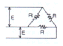
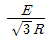
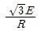
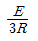
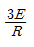
(정답률: 64%)
69. 어떤 교류의 평균값이 566[V]일 때, 실효값은 몇[V] 인가?
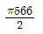
(정답률: 62%)
70. cos wt의 라플라스 변환은?
(정답률: 50%)
71. 다음과 같은 회로에서 a, b 양단의 전압은 몇[V] 인가?
- 1
- 2
- 2.5
- 3.5
(정답률: 57%)
72. 저항R1[Ω],R2[Ω] 및 인덕턴스 L[H]이 직렬로 연결된 회로의 시정수 [s]는?
(정답률: 65%)
73. 8[Ω]인 저항과, 6[Ω]의 용량리액턴스 직렬회로에 E=28-j4[V]인 전압을 가했을 때 흐르는 전류는 몇[A]인가?
- 3.5 - j0.5
- 2.48 + j1.36
- 2.8 - j0.4
- 5.3 + j2.21
(정답률: 44%)
74. 대칭 3상 Y 결선에서 선간전압이 100√3[V] 이고, 각 상의 임피던스 Z = 30 + j40[Ω]의 평형부하일 때 선전류는 몇[A] 인가?
- 2
- 2√3
- 5
- 5√3
(정답률: 50%)
75. 테브낭 정리를 사용하여 다음의 (a) 회로을 (b)와 같은 등가 회로로 바꾸려 한다.V[V]와 R[Ω]의 값은?
- 7, 9.1
- 10, 9.1
- 7, 6.5
- 10, 6.5
(정답률: 63%)
76. 두개의 코일 a, b 가 있다. 두 개를 직렬로 접속 하였더니 합성 인덕턴스가 119[mH]이었고, 극성을 반대로 접속 하였더니 합성 인덕턴스가 11[mH] 이었다. 코일 a 의 자기 인덕턴스가 20[mH]라면 결합 계수 K는 얼마인가?
- 0.6
- 0.7
- 0.8
- 0.9
(정답률: 49%)
77. 위상정수β=10[rad/km], 위상 속도 v=20[m/s]일 때 각 주파수 w는 몇[rad/s]인가?
- 0.1
- 0.2
- 14.1
- 200
(정답률: 37%)
78. 다음과 같은 회로에서 출력전압 V2의 위상은 입력전압 V1보다 어떠한가?
- 같다
- 앞선다
- 뒤진다
- 전압과 관계없다.
(정답률: 53%)
79. 다음과 같은 전기회로의 입력을 e1, 출력을 e0라고 할 때, 전달 함수는? (단, T=L/R이다.)
(정답률: 46%)
80. 다음과 같은 회로에서 t=0인 순간에 스위치 S를 닫았다. 이 순간에 인덕턴스 L에 걸리는 전압은? (단, L의 초기 전류는 0이다.)
- 0
- E
- LE/R
- E/R
(정답률: 59%)
5과목: 전기설비기술기준 및 판단 기준
81. 특별고압 가공전선로의 시설에 대한 내용 중 옳지 않은 것은?
- 특별고압 가공전선을 지지하는 애자장치는 2련 이상의 현수애자 또는 장간애자를 사용한다.
- A 종 철주를 지지물로 사용하는 경우의 경간은 75m 이하이다.
- 사용 전압이 100000 V 를 초과하는 특고압 가공전선은 지락 또는 단락이 생겼을 때에는 1초 이내에 자동적으로 이를 전로로부터 차단하는 장치를 시설한다.
- 전선으로 케이블을 사용하는 경우 조가용선에 행거를 사용하여 시설하며, 행거의 간격은 1m 이하로 시설한다.
(정답률: 51%)
82. 다음 중 전선로의 종류에 속하지 않는 것은?
- 산간 전선로
- 수상 전선로
- 물밑 전선로
- 터널 안 전선로
(정답률: 46%)
83. 옥내에 시설하는 고압의 이동전선의 종류로 알맞은 것은?
- 600V 비닐 절연전선
- 비닐 캡타이어 케이블
- 600V 고무 절연 전선
- 고압용의 3종 클로로프랜 캡타이어 케이블
(정답률: 57%)
84. 사용 전압이 저압인 전로에서 정전이 어려운 경우 등 절연저항 측정이 곤란한 경우에는 누설 전류를 몇[mA] 이하로 유지하여야 하는가?
- 0.1
- 1.0
- 10
- 100
(정답률: 43%)
85. 다음 중 전력보안 통신용 전화설비를 하여야 하는 곳의 기준으로 옳은 것은?
- 2이상의 급전소 상호간과 이들을 총합 운용하는 급전소간
- 3 이상의 급전소 상호간과 이들을 총합 운용하는 급전소간
- 원격감시 제어가 되는 발전소
- 원격감시 제어가 되는 변전소
(정답률: 56%)
86. 사용전압이 400[V]미만인 저압 가공전선은 케이블이나 절연전선인 경우를 제외하고 인장강도가 3.43[KN]이상인 것 또는 지름이 몇mm]이상의 경동선이어야 하는가?
- 1.2
- 2.6
- 3.2
- 4
(정답률: 30%)
87. 제 2종 접지 공사에 사용하는 접지선을 사람이 접촉할 우려가 있는 곳에 시설하는 경우, 접지선의 어느 부분을 합성 수지관 또는 이와 동등 이상의 절연효력 및 강도를 가지는 몰드로 덮어야 하는가?
- 지하 30cm 로부터 지표상 2m 까지
- 지하 50cm 로부터 지표상 1.2m 까지
- 지하 60cm 로부터 지표상 1.8m 까지
- 지하 75cm 로부터 지표상 2m 까지
(정답률: 62%)
88. 전압 조정기의 내장권선을 이상전압으로부터 보호하기 위하여 특히 필요한 경우에는 그 권선에 몇 종 접지 공사를 하여야 하는가? (관련 규정 개정전 문제로 여기서는 기존 정답인 1번을 누르면 정답 처리됩니다. 자세한 내용은 해설을 참고하세요.)
- 1종
- 2종
- 3종
- 특별 3종
(정답률: 50%)
89. 사용전압이 몇[V] 이상의 변압기를 설치하는 곳에는 절연유의 구외 유출 및 지하침투를 방지하기 위하여 절연유 유출 방지설비를 하여야 하는가?
- 10,000
- 20,000
- 100,000
- 300,000
(정답률: 55%)
90. 정류기의 전로로 대지전압이 220V 라고 한다. 이 전로의 절연저항값에 대하여 바르게 설명한 것은 ?
- 0.1MΩ 이상으로 유지하여야 한다.
- 0.1MΩ 이하로 유지하여야 한다.
- 0.2MΩ 이상으로 유지하여야 한다.
- 0.2MΩ 이하로 유지하여야 한다.
(정답률: 46%)
91. 지중전선로를 직접 매설식에 의하여 차량 기타 중량물의 압력을 받을 우려가 있는 장소에 시설할 경우에는 그 매설 깊이를 최소 몇[m]이상으로 하여야 하는가?
- 1.0
- 1.2
- 1.5
- 1.8
(정답률: 61%)
92. 전압의 종별을 구분할 때 직류에서의 고압의 범위는?(오류 신고가 접수된 문제입니다. 반드시 정답과 해설을 확인하시기 바랍니다.)
- 600V를 넘고 6600V 이하인 것
- 750V를 넘고 7000V 이하인 것
- 600V를 넘고 7000V 이하인 것
- 750V를 넘고 6600V 이하인 것
(정답률: 57%)
93. 철도ㆍ궤도 또는 자동차도 전용터널안의 전선로를 시설할 때 저압 전선은 인장강도가 몇[kN] 이상의 절연전선을 사용하여야 하는가?
- 1.38
- 2.30
- 2.46
- 5.26
(정답률: 27%)
94. 옥내에 시설하는 저압 전선에 나전선을 사용할 수 있는 경우는 다음 중 어느 것인가?
- 금속 덕트 공사에 의하여 시설하는 경우
- 버스 덕트 공사에 의하여 시설하는 경우
- 합성 수지관 공사에 의하여 시설하는 경우
- 플로어 덕트 공사에 의하여 시설하는 경우
(정답률: 52%)
95. 일반주택 및 아파트 각 호실의 현관등과 같은 조명용 백열 전등을 설치할 때에는 타임스위치를 시설하여야 한다. 몇 분 이내에 소등되는 것이어야 하는가?
- 1분
- 3분
- 5분
- 7분
(정답률: 74%)
96. 345kV의 가공송전선로를 평지에 건설하는 경우 전선의 지표상 높이는 최소 몇[m]이상이어야 하는가?
- 7.58
- 7.95
- 8.28
- 8.85
(정답률: 72%)
97. 35000v의 특별고압 가공 전선과 가공 약전류 전선을 동일 지지물에 시설하는 경우, 특별고압 가공전선로는 몇 종 특별고압 보안공사에 의하여야 하는가?
- 제 1종
- 제 2종
- 제 3종
- 제 4종
(정답률: 32%)
98. 저압 옥내배선에 미네럴인슈레이션케이블을 사용하는 경우 단면적은 몇[mm2]이상 이어야 하는가?
- 0.75
- 1.0
- 1.2
- 1.25
(정답률: 38%)
99. 교류 전차선과 식물사이의 이격 거리는 몇[m]이상이어야 하는가?
- 1.0
- 1.5
- 2.0
- 2.5
(정답률: 60%)
100. 고압용의 개폐기ㆍ차단기ㆍ피뢰기 기타 이와 유사한 기구로서 동작시에 아크가 생기는 것은 목재의 벽 또는 천장 기타의 가연성 물질로부터 몇[m]이상 떼어놓아야 하는가?
- 0.5
- 1.0
- 2.0
- 3.0
(정답률: 54%)
$$begin{aligned} B_1 &= frac{mu_0 I}{2pi a} \ B_2 &= frac{mu_0 (2I)}{2pi b} end{aligned}$$
여기서 $B_1$과 $B_2$가 서로 상쇄되어 자계의 세기가 0이 되려면, $B_1$과 $B_2$의 크기가 같아야 하고, 방향이 반대여야 한다. 크기가 같으려면 $a/b = 1/2$ 여야 하므로, 정답은 1/2이다.